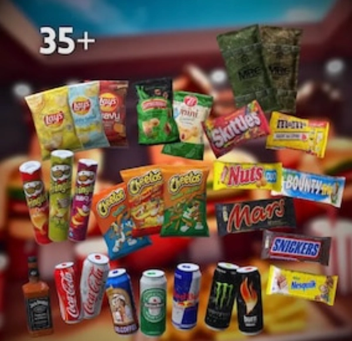

DayZ Launcher Flesh Line Extreme
Map: DayZ Cherno
Location / Map: On
6HR Days / 30 Minute Nights
Ip: 108.83.159.21 : 2302 port
Click The Discord Link Above!


Map: DayZ Cherno
Location / Map: On
6HR Days / 30 Minute Nights
Ip: 108.83.159.21 : 2302 port


Dayz chernarus map was the very first map to be used on the izurvive app. Izurvive is the very first thing that you should download directly after the installing of the game itself. The name of this server is Flesh Line Extreme.Instantly make it a priority to make it to NWAF as this is where all of the food will be flown in by the military. We wanted to add extra grit and understanding to the game. This map app is interactive and will help you find anything from water, to food, weapons and sometimes even other players. Make a plan already? Click on the community server details at the top to get straight into the action, or continue reading to find out what this server is about.


The update for dayz v1.29 road to badlands has been introduced into the flesh line extreme map for this server as well. Take a look below to see what makes this server stand out from the others. As of now, August 8th 2026 all of the Dayz Updates and Patches are current on this server.


We want to give the community a thriving open world scenario that will challeng
everyone that encounters this server. With that being said we also want to do
our very best to make what mods we do install very light on the servers that
we are using. Below is a list of the mods that we will always have on this server.
If we find by popular demand that the community is wanting something more,(or less)
we will adjust it as needed.
DogTags (To allow you to identify friends or enemies)
Bodybags (To allow
everyone to either bury the friend or foe or bring all of there stuff back to them.)
Code Locks (Helping
create a more secure base password system.)
Community Framework & VPP Admin (Fix on the spot problems, as well as monitor regularly)
DayZ Expansion(cars, buildings, keybinding options)


The best gaming laptops for under 1000 dollars will be the Acer V 15 laptop. It will handle the Dayz standalone game with ease. On this DayZ Standalone map we will have a list of 3 unique survivor vehicle mods scattered across the cherno map that will need to be assembled and put together from scratch. Boats will have a overhaul and not dacay unless damaged/ ruined by a player. How to play dayz is completely up to you on this community server.